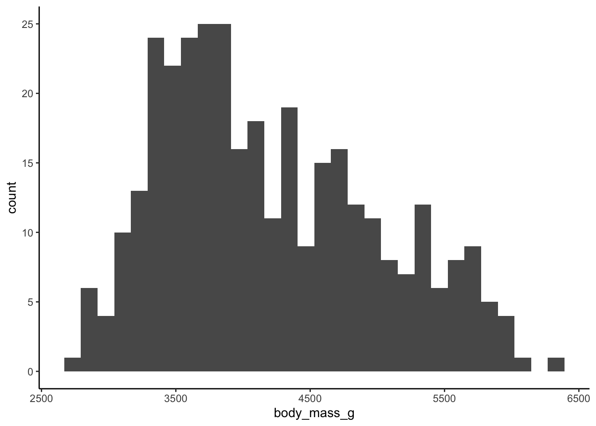

Code
# Uncomment and run this line once
#install.packages("tidyverse")
# load the package
library(tidyverse)
Nothing is worse than reading a scientific publication only to encounter muddled, overly busy figures. Clear storytelling is a cornerstone of scientific writing, and the saying “a picture is worth a thousand words” has never been more relevant. Let’s dive into creating clean, effective figures in R!
First, we need to make sure that tidyverse is installed. ggplot is a package within tidyverse, which is one of the most useful tools in R for data wrangling and visualization.
# Uncomment and run this line once
#install.packages("tidyverse")
# load the package
library(tidyverse)Next, lets read in our data. We’ll be working with the palmer penguins dataset, which is free and publicly available.
# Uncomment and run this line once
#install.packages("palmerpenguins")
library(palmerpenguins)
data <- penguinsFirst, let’s look at the data in a tabular form.
print(data)# A tibble: 344 × 8
species island bill_length_mm bill_depth_mm flipper_length_mm body_mass_g
<fct> <fct> <dbl> <dbl> <int> <int>
1 Adelie Torgersen 39.1 18.7 181 3750
2 Adelie Torgersen 39.5 17.4 186 3800
3 Adelie Torgersen 40.3 18 195 3250
4 Adelie Torgersen NA NA NA NA
5 Adelie Torgersen 36.7 19.3 193 3450
6 Adelie Torgersen 39.3 20.6 190 3650
7 Adelie Torgersen 38.9 17.8 181 3625
8 Adelie Torgersen 39.2 19.6 195 4675
9 Adelie Torgersen 34.1 18.1 193 3475
10 Adelie Torgersen 42 20.2 190 4250
# ℹ 334 more rows
# ℹ 2 more variables: sex <fct>, year <int>So there are eight columns and 344 rows. Let’s say we are interested in penguin weight. We’ll need to look at the “body_mass_g” variable.
Let’s create a basic histogram to look at the distribution of this continuous variable.
To start, you call ggplot(). The first argument is our data.
I could also code it with data = data, although the first argument with ggplot is always the “data =” argument.
Next we have to specify the aesthetics. Since a histogram only has an x argument (our continuous variable: body_mass_g, in our case), that’s all we need.
ggplot(data = data, aes(x = body_mass_g))
# or
ggplot(data, aes(body_mass_g))
However, this is just a blank graph. We need to specify which type of graph. In this example, we will create a histogram. Each additional “geom” is added by a “+” sign. I generally like to start a new line after each “+”.
ggplot(data, aes(x = body_mass_g)) +
geom_histogram()
Not bad! Now let’s customize it. I personally do not like the default ggplot look, so let’s try some built in themes.
ggplot(data, aes(x = body_mass_g)) +
geom_histogram() +
theme_bw()
ggplot(data, aes(x = body_mass_g)) +
geom_histogram() +
theme_minimal()ggplot(data, aes(x = body_mass_g)) +
geom_histogram() +
theme_classic()
ggplot(data, aes(x = body_mass_g)) +
geom_histogram() +
theme_linedraw()I prefer theme_bw() or theme_minimal(). Let’s stick with those going forward.
Maybe you want to change the fill color of the histogram bars. Colors in R are always specified within quotes.
ggplot(data, aes(x = body_mass_g)) +
geom_histogram(fill = "red") +
theme_minimal()
Maybe you want you want each species to have a different color. We’ll need to specify which variable is our fill within the aes().
ggplot(data, aes(x = body_mass_g, fill = species)) +
geom_histogram() +
theme_minimal()
Great! But these are stacked bars. We want them to overlap.
ggplot(data, aes(x = body_mass_g, fill = species)) +
geom_histogram(position = "identity") +
theme_minimal()
But we can’t quite see some of the bars that overlap. Let’s change the transparency (alpha).
ggplot(data, aes(x = body_mass_g, fill = species)) +
geom_histogram(position = "identity", alpha = 0.7) +
theme_minimal()
Much better!
The x and y-axes aren’t very pretty right now. Let’s change that. We’ll use labs().
ggplot(data, aes(x = body_mass_g, fill = species)) +
geom_histogram(position = "identity",
alpha = 0.7) +
theme_minimal() +
labs(x = "Body Mass (g)",
y = "Frequency",
fill = "Species")
Since this is a basic introduction to ggplot, we will not go into all the other geoms. However, there are several other types of graphs you can make:
geom_bar: bar graphs
geom_point: scatterplots
geom_line: linegraphs
geom_text: adding text to your figure
And so many more!
Now let’s save our figure. Most journals require between 300-600 dots per inch (dpi).
ggsave("penguins_histogram.jpg", width = 5, height = 3, dpi = 300)And that’s it! Thanks for reading! Look out for more R tutorials.